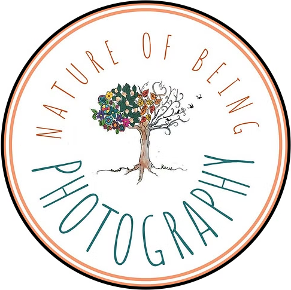

Landscape photography is the art of capturing natural scenery, such as mountains, rivers, forests, and skies. The goal is to showcase the beauty of nature and create visually appealing images. It often involves wide-angle compositions, dramatic lighting, and a deep depth of field to keep everything sharp. Landscape photographers often use tripods to stabilize their cameras, especially in low light conditions. Filters, such as polarizers and neutral density filters, are also commonly used to enhance colors and control exposure. Patience and timing are crucial, as the best light for landscape photography often occurs during the golden hours of sunrise and sunset.
Wildlife photography is a fascinating and challenging genre that captures animals in their natural habitats. It requires a deep understanding of both photography and wildlife behavior, as well as patience, perseverance, and technical skills. Photographers must be prepared to spend hours or even days waiting for the perfect shot, all while being mindful of ethical considerations and environmental impact. Each location presents its own challenges, such as extreme weather, difficult terrain, or dangerous animals. Protection of both the photographer and the wildlife is a priority, so carrying weatherproof gear, insect repellent, and emergency supplies is often necessary. Many national parks and wildlife reserves are excellent locations for photography, as they provide access to diverse species in relatively undisturbed settings.
Street photography is a dynamic and spontaneous genre that captures everyday life in public spaces. Unlike studio or portrait photography, street photography is unposed and unscripted, focusing on candid moments that reveal the essence of human interaction, urban landscapes, and cultural diversity. It is not just about taking pictures of people on the streets but about storytelling—freezing fleeting moments that might otherwise go unnoticed. The challenge lies in anticipating these moments and composing shots in a way that reflects the emotions, patterns, and energy of the environment.Artificial lighting, such as neon signs, street lamps, and reflections from shop windows, can also contribute to the atmosphere, especially in nighttime street photography.
Sports photography is an exciting and dynamic field that focuses on capturing fast-paced action, emotion, and intensity in athletic events. Unlike other forms of photography, sports photography demands quick reflexes, technical expertise, and an understanding of the sport being covered. A good sports photographer must anticipate movements before they happen, which requires a deep knowledge of the sport and the athletes involved. Knowing where the action will unfold allows photographers to position themselves strategically for the best shots. Whether it's standing at the finish line of a race or near the goalpost in a football match, being in the right place at the right time can make all the difference.
Documentary photography is a powerful and immersive form of visual storytelling that captures real-life events, people, and environments with the aim of telling a truthful and compelling story. Unlike staged or commercial photography, documentary photography is rooted in authenticity, aiming to present subjects as they are without manipulation. It is often used to shed light on social issues, historical events, cultures, and everyday life, making it a crucial tool for journalism, activism, and historical preservation. The essence of documentary photography lies in its ability to capture raw, unscripted moments that reflect reality. Photographers working in this genre often spend extended periods with their subjects to build trust and truly understand the stories they are documenting.
Photography ❤️